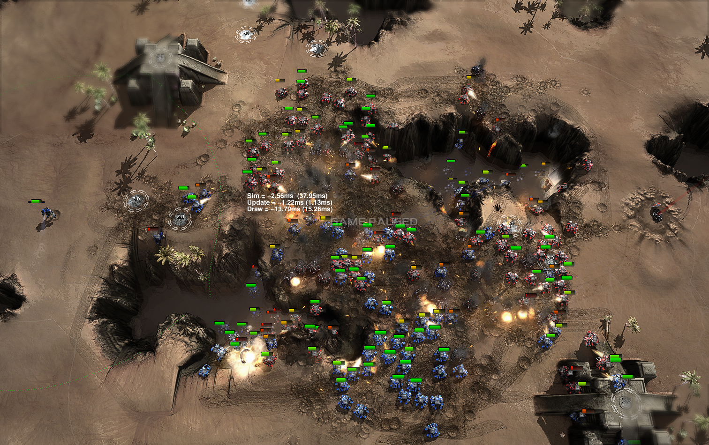
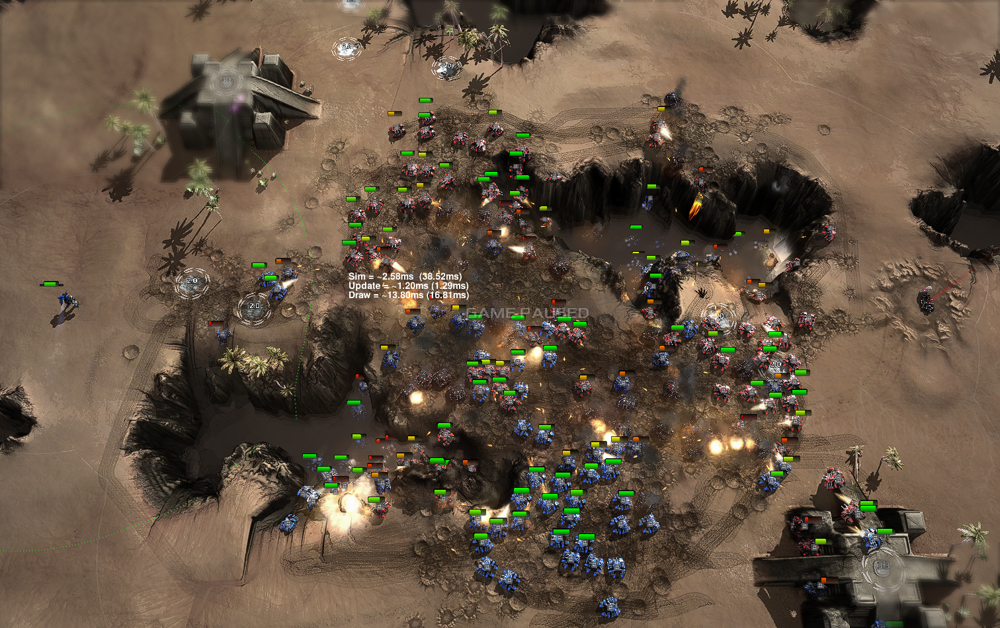

Seths Ravine · Ultra AA0 · 1512×950. 같은 실행 파일에서 G02만 OFF/ON, S01·G01은 양쪽 ON. 각각 3회, 10초 전투 워밍업 뒤 40초 측정.
| 실행 순서 | G02 | 평균 FPS | 1% low FPS |
|---|---|---|---|
| A1_OFF | OFF | 62.9656 | 53.4979 |
| B1_ON | ON | 62.8610 | 53.6083 |
| B2_ON | ON | 62.9108 | 55.2017 |
| A2_OFF | OFF | 62.9031 | 52.7383 |
| A3_OFF | OFF | 62.9547 | 54.0541 |
| B3_ON | ON | 62.8921 | 52.8455 |
6회 모두 정상 종료했고, 실제 40개 구간의 시뮬레이션 진행·유닛 수·카메라·게임 속도·일시정지가 일치했습니다. 느린 결과를 포함해 6회 전부 사용했으며 과거 G01 결과와 섞지 않았습니다.
대상 데칼 준비마다 설정값·인덱스 업로드 버퍼를 2개에서 1개로 줄이는 구조를 검증했습니다. 별도 진단에서 합친 경로 3,174회를 확인했으나, 이는 예열을 포함한 전체 수명 기록이며 CPU 시간 절감이나 FPS 향상을 뜻하지 않습니다. GPU 비교 32개 사례와 실게임 Metal 검증을 통과했습니다.
Simmers는 별도 진단에서 owner 생성은 확인됐지만 데칼 준비·버퍼 생성 모두 0회였습니다. 따라서 저부하 6회는 G02 성능 측정을 시작하기 전에 추가 실험 대상으로 선정하지 않았습니다. 기존 183 FPS 단회 결과는 보존했고 원인은 미확정입니다.


1% low는 회차별 값의 평균입니다. 프레임 간격은 CPU 관찰값이며 GPU 실행 시간과 다릅니다. 기본 설정·설치 앱·Git·배포는 바꾸지 않았습니다.
판정: 성능 기준은 기존 G01 채택 상태로 유지합니다. G02는 FPS 이득이 입증되지 않은 비용 절감 후보로 별도 보존하며, 추가 재시험은 하지 않습니다.
집계 JSON · 6회 CSV · 원본 조건 대조 · 원본 결과
실행 계획에 남은 600..1800 표기는 이전 메타데이터입니다. 실제 6회 모두 기록된 시뮬레이션 구간 540..1740을 사용했고 원본은 보존했습니다.
실행 파일 SHA256: f83dae3cde8cd2a752d1d7ff9fc7629f8a5820f72e3f05306f7c57ab5ec2fca2